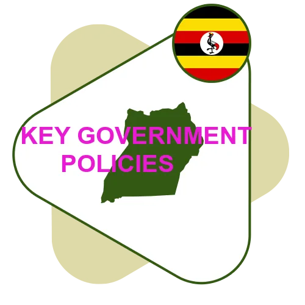
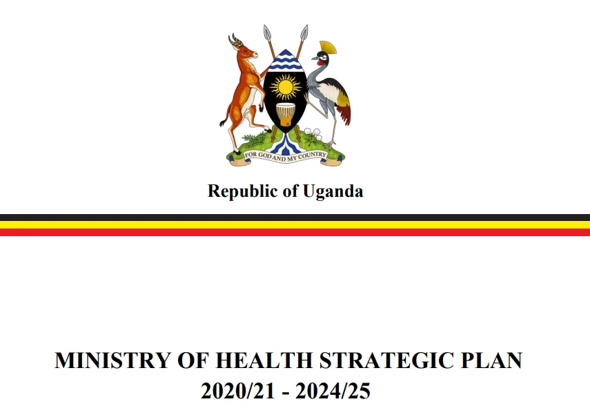
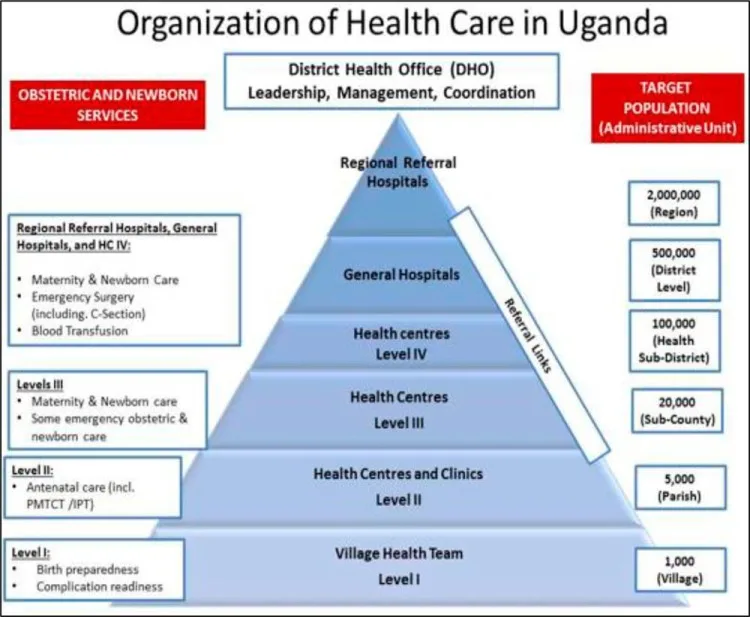
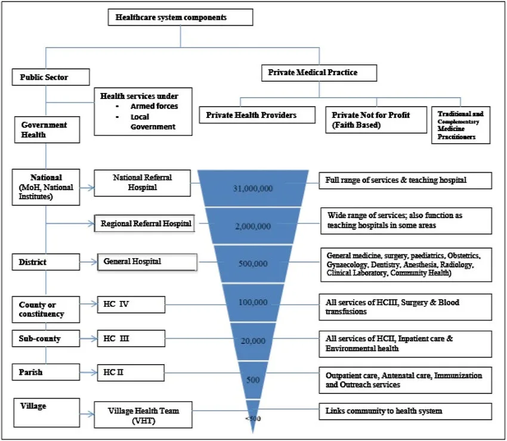
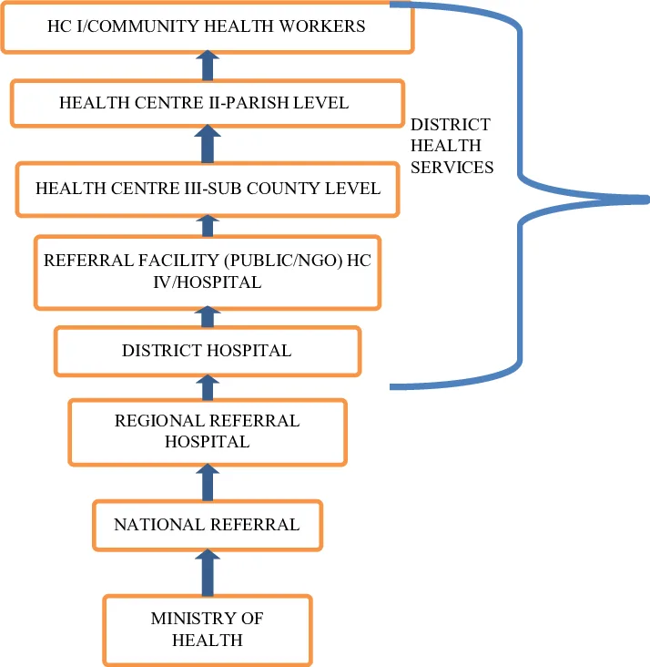
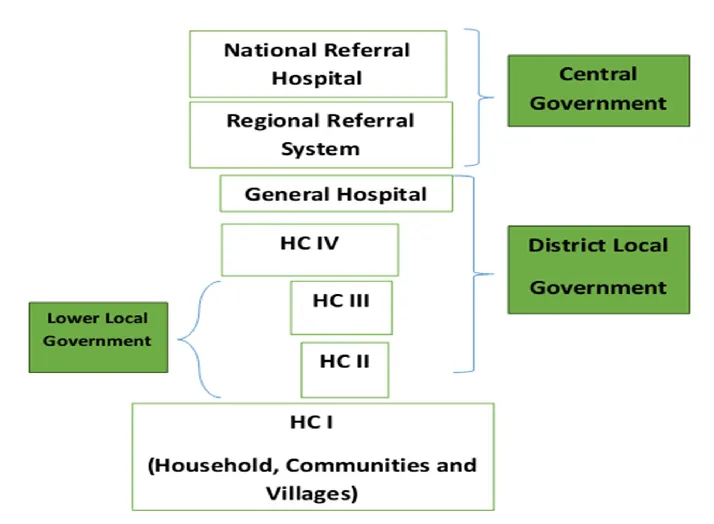

Expanded Nursing Uganda Explanation
Key government policies should be reviewed through safe maternal and newborn assessment, early recognition of danger signs, respectful communication and timely referral. Connect the definition to vital signs, bleeding, fetal or newborn wellbeing, patient education and local protocol requirements.
01 KEY GOVERNMENT POLICIES
A policy is a comprehensive set of guidelines that outlines the desired direction of actions and operations .
It outlines the interests and values of the people it is meant to serve and provides guidance for present and future actions. Government policies are designed to address specific issues, challenges, or goals and often involve multiple sectors and stakeholders.
Government policies can cover a wide range of areas, including healthcare, education, economic development, environmental protection, social welfare, and more. They serve as a framework for decision-making, resource allocation, and the implementation of programs and initiatives .
Example of Key Government Policies realted to Health
1. National Health Policy (1999, 2010) : The National Health Policy sets out the overall vision, goals, principles and strategies for the health sector in Uganda. It provides guidance on issues such as health service delivery, health financing, human resources for health, and health infrastructure development. This policy aims to improve the health status of Ugandans by promoting equitable access to quality healthcare services, empowering communities, and addressing health disparities. It emphasizes primary healthcare, disease prevention, and health promotion.
2. National Policy on Public-Private Partnership in Health (2012) : This policy encourages collaboration between the government and private sector to enhance healthcare delivery. It aims to harness the strengths of both sectors to improve access, quality, and efficiency in healthcare provision. It outlines the framework for partnerships, including roles, responsibilities, and mechanisms for monitoring and evaluation.
3. Uganda National HIV and AIDS Policy (2011) : This policy provides a comprehensive approach to combating HIV and AIDS in Uganda. It focuses on prevention, treatment, care, and support for affected individuals and communities.
4. Policy Guidelines for Prevention of Mother-to-Child Transmission of HIV (2006) : These guidelines aim to reduce the transmission of HIV from mothers to their children during pregnancy, labor, and breastfeeding. They outline effective interventions, such as antiretroviral therapy and counseling.
5. Guidelines for Management of Private Wings of Health Units in Uganda (2010) : These guidelines regulate the establishment and operation of private wings within public health facilities. They ensure quality standards, ethical practices, and accountability in the provision of healthcare services.
6. Safe Male Circumcision Policy (2010) : This policy promotes safe male circumcision as an effective HIV prevention measure. It outlines the procedures, training requirements, and quality assurance mechanisms for circumcision services.
7. Uganda HIV Counseling and Testing Policy (2011) : This policy provides guidance on the voluntary and confidential provision of HIV counseling and testing services. It emphasizes the importance of informed consent, confidentiality, and linkage to care and support.
8. Local Government Sector Workplace Policy on HIV/AIDS (2009) : This policy addresses HIV/AIDS in the workplace, promoting prevention, awareness, and support for affected employees. It outlines the roles and responsibilities of employers and employees in creating a supportive and inclusive work environment.
9. Ministry of Education, The Education Sector HIV and AIDS Workplace Policy : This policy aims to reduce the impact of HIV/AIDS on the education sector. It provides guidance on prevention, care, and support for students, teachers, and staff.
10. Guidelines for HIV/AIDS Coordination at Decentralized Levels in Uganda (2013) : These guidelines strengthen the coordination of HIV/AIDS services at the local level. They outline the roles and responsibilities of various stakeholders, including district health teams, local governments, and community organizations.
11. Village Health Team Strategy and Operational Guidelines : These guidelines provide a framework for engaging and utilizing Village Health Teams (VHTs) in community-based healthcare delivery. VHTs play a important role in promoting health education, disease surveillance, and access to healthcare services in rural areas.
02 National Health Policy and Health Sector Strategic Plan (HSDP)
The National Health Policy (NHP) and HSDP are formulated within the framework of the Constitution of the Republic of Uganda (1995) and the Local Government Act (1997), which decentralized governance and service delivery. They are also guided by the National Health Sector Reform Programme, the National Poverty Eradication Programme, and the Alma Ata Declaration of Health for All (HFA).
Mission Statement of the NHP:
“The overall goal of the health sector is the attainment of a good standard of health by all people in Uganda in order to promote a healthy and productive life.”
- Reduce mortality, morbidity, and fertility, and the disparities therein
- Ensure access to the minimum healthcare package
Key Priorities of the NHP:
- Control of communicable diseases (malaria, STIs/HIV/AIDS, tuberculosis).
- Integrated management of childhood illnesses (IMCI).
- Sexual and reproductive health rights (antenatal and obstetric care, family planning, adolescent reproductive health, violence against women).
- Other public health interventions (immunization, environmental health, health education and promotion, school health, epidemic and disaster prevention, nutrition, eradication of diseases such as guinea worm, river blindness, polio, neonatal tetanus, and measles).
- Strengthening mental health services.
- Essential clinical care (injuries, non-communicable diseases, disabilities, rehabilitative health, palliative care, oral/dental health).
Guiding Principles of the NHP:
Primary Health Care (PHC) as the basic philosophy and strategy for national health development;
- Equitable distribution of health services throughout the country.
- Cost-effective, quality healthcare interventions.
- High efficiency and accountability in health system management.
- Health promotion, disease prevention, and community empowerment.
- Attention to emerging health problems, including healthcare for the elderly
- Strengthened partnerships between public and private sectors, NGOs, and traditional practitioners.
- Inter-sectoral cooperation and coordination for health development.
- Gender-sensitive and responsive health system.
- Sustainable additional health financing mechanisms.
HSDP Priorities:
The government will prioritize cost-effective health services that have the greatest impact on reducing mortality and morbidity.
- These include interventions to address malaria, STIs/HIV/AIDS, tuberculosis, diarrheal diseases, acute lower respiratory tract infections, perinatal and maternal conditions, vaccine-preventable childhood illnesses, malnutrition, injuries, and physical and mental disability.
These interventions will be integrated into the Uganda National Minimum Healthcare Package, which will be regularly reviewed.
03 HEALTH SECTOR DEVELOPMENT PLAN (HSDP)
RATIONALE FOR HSDP:
Locally :
- Part of the overall health sector planning framework.
- Provides strategic focus for the sector in the medium term.
- Contributes to the implementation of the National Development Plan (NDP II) and the National Health Policy (NHP II).
- Guided by the NDP II, which sets Uganda’s medium-term strategic direction and development priorities.
Regionally:
- Formulated in recognition of the Common African Position (CAP) of the African Union.
- Emphasizes universal and equitable access to quality healthcare, with a focus on vulnerable groups and strengthening health systems.
Internationally :
Aligned with Uganda’s global commitments, including:
- Implementation of the International Health Regulations.
- Ouagadougou Declaration on Primary Health Care and Health Systems.
- International Health Partnerships (IHP+) on Aid Effectiveness.
- Post-MDG 2015 agenda (UN Social Development Goals).
- International Human Right agreements.
STRATEGIC DIRECTION:
Medium-term plan (5 years) guiding the health sector towards achieving NHP II objectives
AIM :
To achieve Uganda Vision 2040 of a healthy and productive population contributing to socioeconomic growth and national development
STRATEGY :
- Implementing the Uganda National Minimum Health Care Package
- Client-centered approach
- Focus on both supply and demand side of healthcare
GOAL :
To accelerate movement towards Universal Health Coverage (UHC), ensuring that all people receive essential and good quality health services without financial hardship.
GUIDING PRINCIPLES:
- Equity and non-discrimination
- Participation and accountability
- The right to health elements of availability, accessibility, acceptability, and quality
PRIORITY AREAS OF INTERVENTION:
- Health promotion, environmental health, disease prevention, and community health interventions.
- Prevention, management, and control of communicable diseases.
- Prevention, management, and control of non-communicable diseases.
- Maternal and child health.
HSDP INVESTMENT FOCUS:
- Health governance and partnerships.
- Service delivery systems.
- Health information.
- Health financing.
- Health products and technologies.
- Health workforce.
- Health infrastructure.
04 THE UGANDA’S NATIONAL HEALTH SYSTEM/SECTOR.
WHO defines a health care system as –
“ All the activities whose primary purpose is to promote, restore and/or maintain health ”.
It incorporates the people, institutions and resources, arranged together in accordance with established policies, to improve the health of the population they serve, while responding to people’s legitimate expectations and protecting them against the cost of ill-health through a variety of activities whose primary intent is to improve health.
This definition encompasses Health actions and Non-Health actions within and outside the Health Sector that lead to desired health results.
The World Bank defines health systems more broadly to include factors interrelated to health, such as poverty, education, infrastructure and the broader social and political environment .
Well-functioning health systems are critical in the achievement of the Sustainable Development Goals (SDGs) by 2030 .
The Ugandan National Health Care System is a well-organized one built on a decentralized framework . Health care services are delivered through a referral system. In the provision of health services in Uganda, districts and Health Sub Districts (HSDs) are playing a key role in the delivery and management of health services at those levels. The district health structure is responsible for all the structures except the regional referral hospitals where they exist .
COMPONENTS:
The National Health System (NHS) is made up of the public and private sectors.
Public Sector:
- All GoU health facilities under the MOH.
- Health services of the Ministries of Defense (ARMY), Education, Internal Affairs (police and prisons), and Ministry of Local Government (MoLG).
Private Sector:
- Private Not for Profit (PNFPs) providers
- Private Health Practitioners (PHPs)
- Traditional and Complementary Medicine Practitioners (TCMPs)
PUBLIC HEALTH SECTOR UNDER MOH:
The public health sector under MOH is structured directly from MOH headquarters, the national services ( National Referral Hospitals (NRHs) and Regional Referral Hospitals (RRHPs), General Hospitals , District health headquarters (District health team), Health Centre (HC) IVs, HCIIIs, HCIIs, and community health services (community health centers and workers, households, Village Health Teams (VHTs-HCIs).
05 MOH HEADQUARTERS AND NATIONAL LEVEL INSTITUTIONS:
The core functions of the MOH headquarters are as follows:
- Policy analysis, formulation, and dialogue
- Strategic planning
- Setting standards and quality assurance
- Resource mobilization
- Advising other ministries, departments, and agencies on health-related matters
- Capacity development and technical support supervision
- Provision of nationally coordinated services including health emergency preparedness and response and epidemic prevention and control
- Coordination of health research
- Monitoring and evaluation of overall health sector performance
- General Hospitals : provide preventive, promotive, curative, maternity, in-patient services, surgery, blood transfusion, laboratory and medical imaging services, and clinical support services, training, consultation and operational research in support of the community-based health programmes.
- Regional Referral Hospitals : offer specialist clinical services such as psychiatry, Ear, Nose and Throat (ENT), ophthalmology, higher surgical and medical services, and clinical support services(laboratory, medical imaging and pathology).They are also involved in teaching and research. This in addition to services provide by General hospitals.
- National Referral Hospitals : Provide comprehensive specialist services and are involved in health research and teaching in addition to providing services offered by general hospitals and RRHs.
The Ministry of Health and National Level Institutions
The Ministry of Health (MOH) is the central authority responsible for health care in Uganda. Its core functions include:
- Policy analysis, formulation, and dialogue : Developing and reviewing health policies and strategies.
- Strategic planning : Setting long-term goals and objectives for the health sector.
- Setting standards and quality assurance: Establishing and monitoring standards for health services to ensure quality and safety.
- Resource mobilization: Securing funding and other resources for the health sector.
- Advising other ministries , departments, and agencies on health related matters: Providing guidance and expertise on health issues to other government entities.
- Capacity development and technical support supervision : Training and supporting health workers to improve their skills and knowledge.
- Provision of nationally coordinated services : Managing national health programs, such as emergency preparedness and response, and epidemic prevention and control.
- Coordination of research : Facilitating and supporting health research activities.
- Monitoring and evaluation of the overall health sector performance: Tracking and assessing the progress and impact of health interventions.
To enhance efficiency and effectiveness, the MOH has delegated some of its functions to autonomous institutions. These institutions include:
Specialized Clinical Services
- Uganda Cancer Institute : Provides specialized cancer care.
- Uganda Heart Institute : Provides specialized heart care.
Specialized Clinical Support Services
- Uganda Blood Transfusion Services (UBTS) : Manages the national blood supply.
- Uganda Virus Research Institute : Conducts research on viruses and infectious diseases.
- National Medical Stores : Procures and distributes essential medicines and medical supplies.
- National Public Health Laboratories : Provides laboratory testing and surveillance services.
Regulatory Bodies / Authorities
- National Drug Authority : Regulates the importation, distribution, and use of drugs.
- Medical and Dental Practitioners Council: Regulates the practice of medicine and dentistry.
- Allied Health Professional’s Council: Regulates the practice of allied health professions.
- Pharmacy Council : Regulates the practice of pharmacy.
- Nurses and Midwives Council : Regulates the practice of nursing and midwifery.
Other National Level Institutions
- Uganda National Research Organization (UNHRO) : Coordinates national health research activities.
- Health Service Commission : Manages human resources for health.
- Uganda AIDS Commission (UAC) : Guides the multi-sectoral response to HIV/AIDS.
06 District Health Systems:
The constitution (1995) and local Government Act (1997) mandate the local Governments (LGs) to plan, budget, implement health policies and health sector plans. The LGs have the responsibility of :
- recruitment, deployment, development and management of human resource (HR) for district health services.
- Development and passing of health-related by-laws and monitoring of the overall health sector performance.
- LGs manage public general hospitals and HCs also supervise and monitor all health activities (including those in the private sector) in their respective areas of responsibility. The public private partnership at district level is still weak.
Health sub-District system : The HSDs are mandated with planning, organization, budgeting and management of the health services at this and lower health centre levels. HSDs carry an oversight function of overseeing all curative, preventive, promotive and rehabilitative health activities including those carried out by the PNFPs and PFP service providers in the health sub-district. The headquarters of the HSD will and remain a HCIV or a selected general hospital.
Health centres III, II and village Health Teams (HCI) : HCIIIs provide basic preventive, promotive and curative care. They also provide support supervision of the community and HCIIs under their jurisdiction. There are provisions for laboratory services for diagnosis, maternity care and first referral cover for the sub-county. The HCIIs provide the first level of interaction between the formal health sector and the communities. HCIIs only provide out patient care, community outreach services and linkages with the village Health Teams(VHTs).
According to HSDP 2015/016 the community health services will be delivered by training 15000 community health extension workers(CHEWS) distributed among 7500 parishes at community health centers. These will supervise and work with VHTs that are accountable for the health of certified model households/families. The ministry targets 300,000 model households in place by 2020.Eventually the entire country’ population/households should have a VHT who looks after their health, VHT reports to an assigned trained CHEW. Currently, CHEWS are being trained in pilot districts in eastern Uganda and this will spread out as planned by the sector.
A network of VHTs has been established in Uganda which is facilitating health promotion, service delivery, community participation and empowerment in access to and utilization of health services. The VHTs are responsible for:
- Identifying the community’s health needs and taking appropriate measures;
- Mobilizing community resources and monitoring utilization of all resources for their health.
- Mobilizing communities for health interventions such as immunization, malaria control, sanitation and promoting health seeking behavior;
- Maintaining a register of members of households and their health status;
- Maintaining birth and death registration; and Serving as the first link between the community and formal health providers.
- Community based management of common childhood illnesses including malaria, diarrhea and pneumonia; and
- management and distribution of any health commodities availed from time to time.
While VHTs are playing an important role in health care promotion and provision, coverage of VHTs is however still limited: VHTs by 2010 had been established in 75% of the districts in Uganda but only 31% of the districts had trained VHTs in all the villages. Attrition was quite high among VHTs mainly because of lack of emoluments. (HSSIP 2010/11-2014/15).
The district health services are led by the District Health Officer (DHO), a medical officer with additional management training. The DHO, along with other health officials in the district, is responsible for the overall management of district health services.
Members of the District Health Management Team
The District Health Management Team (DHMT) usually includes the following members:
- District Biostatistician
- District Health Educator
- District Nursing Officer
- District Stores Manager (Medical)
- District Cold Chain Manager
- District Environmental Health Officer
- District Laboratory Focal Person
- District Tuberculosis and Leprosy Supervisor
- District Vector Control Officer
- Heads/In-Charges of Health Sub-Districts (HSDs) in the district
- Any other member deemed necessary by the DHO
Functions of the District Health Management Team
The DHMT, led by the DHO, is responsible for all health-related activities in the district, including:
- District Planning : The DHO coordinates all health service planning in the district in collaboration with other district officials.
- Supervision of District Health Activities : The DHMT supervises all government and private not-for-profit (PNFP) health facilities through regular visits. They provide guidance to staff and ensure that appropriate records are maintained. The DHMT also supervises special health programs such as the Expanded Programme on Immunization (EPI), Tuberculosis and Leprosy control, and family planning.
- Training of Health Personnel : The DHO’s office coordinates basic training in the district. The DHO is also responsible for the continuing education of all health staff and supports the training of community-based health workers.
- Clinical Work: The DHO may also participate in clinical work, particularly in situations where there is a shortage of health workers.
Health Care Setting Management Positions
In addition to the DHMT, various management positions exist within health care settings, including:
- Ward : In-Charge
- Special Clinic : In-Charge
- Outreaches: Coordinator
- Records Department : Director of Medical Reports
- Nursing : Senior/Principal Nursing Officer
Summary: Organization of Health Services in Uganda
The Ugandan health care system is organized into eight levels:
1. Ministry of Health : Responsible for setting policies and standards, resource mobilization, capacity building, technical supervision, monitoring and evaluation, and overall regulation.
2. National Referral Hospitals Population:30,000,000 : Provide comprehensive specialist services, teaching, and research.
3 . Regional Referral Hospitals Population: 2,000,000 : Serve a region of about 3 million people. Offer specialist services, teaching, and research.
4. District Hospitals Population: 500,000 : Serve a district. Provide preventive, promotive, outpatient curative, maternity, inpatient health services, emergency surgery, blood transfusion, laboratory, and other general services.
5. Health Sub-Districts and HCIV: Population: 100,000
- Plan and manage health services within the Health Sub-District (HSD).
- Provide technical, logistical, and capacity development support to lower health units and communities.
- The referral facility at HSD is HCIV, which can be government or PNFP.
- HCIV provides basic preventive, curative, and rehabilitative care in the immediate catchment area and serves as a referral facility for lower-level units in the HSD.
6. Health Center 3 (HCIII) Population: 20,000
- Offers continuous basic preventive, promotive, and curative care.
- Provides support supervision to community and HCII facilities.
7. Health Center 2 (HCII) Population:5,000 : Represents the first level of interaction between the formal health sector and communities.
8. Village Health Team (Health Centre I) Population: 1,000
- Facilitates community mobilization and empowerment for health action.
- Each village has a VHT of 9-10 people selected by the village leadership.
07 Nursing Uganda Clinical Lens
Use Uganda Health Sector as a practical nursing topic, not only a memorized definition. Translate theory into safe decisions, accountability, communication and service improvement.
- What to understand first: define uganda health sector, identify the normal or expected pattern, then explain what changes when the patient is unwell.
- Why it matters in care: the nurse must recognize risk early, explain findings clearly, document accurately and know when to escalate.
- How to revise it: connect each point to assessment, nursing diagnosis or care problem, intervention, rationale and evaluation.
08 Assessment Guide
- The problem, stakeholders, available resources, policy requirements and ethical issues.
- Risks to patients, staff, confidentiality, quality, costs and continuity.
- Documentation, reporting lines, supervision and evaluation measures.
09 Nursing Priorities, Rationales and Outcomes
- Use evidence, policy and professional standards to guide action.
- Communicate clearly, document decisions and protect confidentiality.
- Evaluate whether the action improves safety, learning or service delivery.
The rationale for these priorities is patient safety: nursing actions should prevent deterioration, reduce discomfort, support recovery and create clear evidence for the next caregiver.
- Expected outcome: The plan is documented, realistic, ethical and improves patient care or learning outcomes.
10 Patient Teaching and Revision Check
- Explain uganda health sector in simple language the patient or caregiver can repeat back.
- Teach warning signs, medicine or follow-up instructions, hygiene or lifestyle points where relevant.
- For exams, prepare a short answer using: definition, causes or risk factors, signs, assessment, management, complications and prevention.
- For ward practice, document baseline findings, actions taken, patient response and the plan for review.
Illustrations and Diagrams (9)








1 more diagram available, open the lesson for full illustrations.
Related Video Lectures
Watch nursing lecture videos on YouTube for this topic. Opens in a new tab.
Watch on YouTubeExternal link: YouTube may use its own cookies and terms. Nursing Uganda is not affiliated with YouTube.